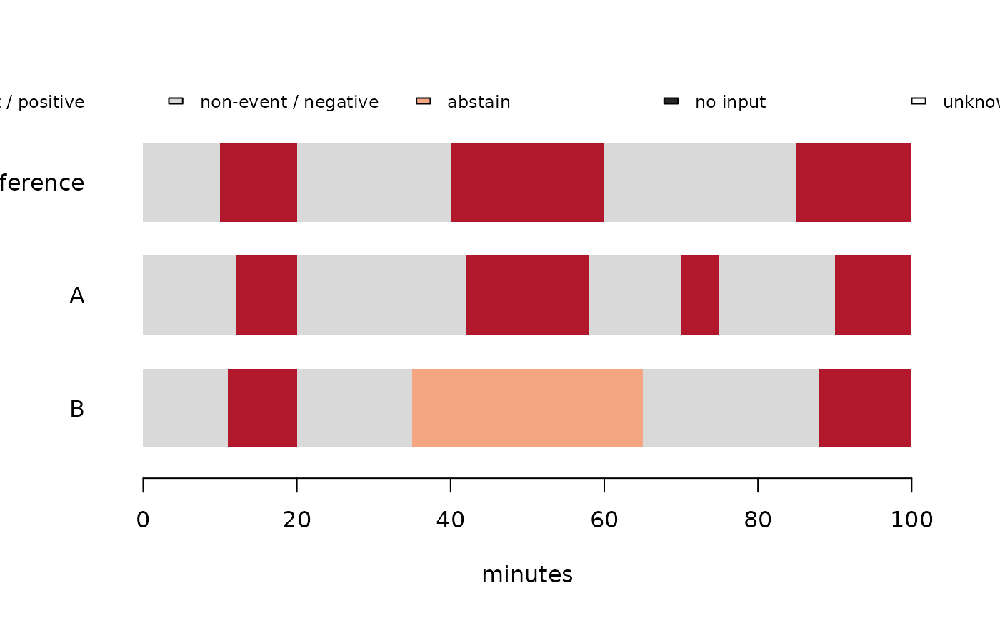

Timeline plot of one record
plot.tl_ledger.RdDraws the reference, each detector's responses, and optionally the time included in a comparison, using base graphics. Colours distinguish positive, negative, abstained, no-input and unknown responses; the reference lane distinguishes event, non-event and unknown time.
Usage
# S3 method for class 'tl_ledger'
plot(x, record = NULL, from = NULL, to = NULL,
detectors = NULL, include = NULL, time_scale = 1, xlab = "time",
legend = TRUE, ...)Arguments
- x
A
tl_ledger.- record
Record to draw (defaults to the first).
- from,to
Time window.
- detectors
Detectors to draw (defaults to all).
- include
Optional named list of logical vectors (one value per ledger row) drawn as extra lanes, e.g. the rows kept in a shared-time comparison.
- time_scale
Divide times by this for the axis (e.g. 60 to show minutes when times are in seconds).
- xlab
Axis label.
- legend
Draw a legend?
- ...
Passed to
graphics::plot().
Examples
fx <- tl_fixture("two_detectors")
led <- tl_ledger(fx$records, fx$reference, fx$predictions,
time_unit = "min")
plot(led, xlab = "minutes")
